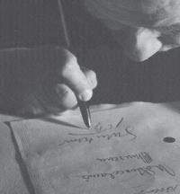

Semih Gümüş
1956’da Ankara’da doğdu. 1971’de Ankara Fen Lisesi’ne girdi, 1981’de AÜ Siyasal Bilgiler Fakültesi’ni bitirdi. İlk yazısı aynı yıl Yazko Edebiyat dergisinde yayımlandı. 1981-1985 yılları arasında Yarın dergisinin, 1995-2005 yılları arasında AdamÖykü dergisinin genel yayın yönetmenliğini yaptı. Pek çok derginin kuruluşunda, yönetiminde yer aldı. 2006 Aralık ayında Notos dergisinin yayın yönetmenliğini üstlendi. Eleştiri ve deneme kitaplarının yanı sıra, öykü antolojileri hazırladı.
